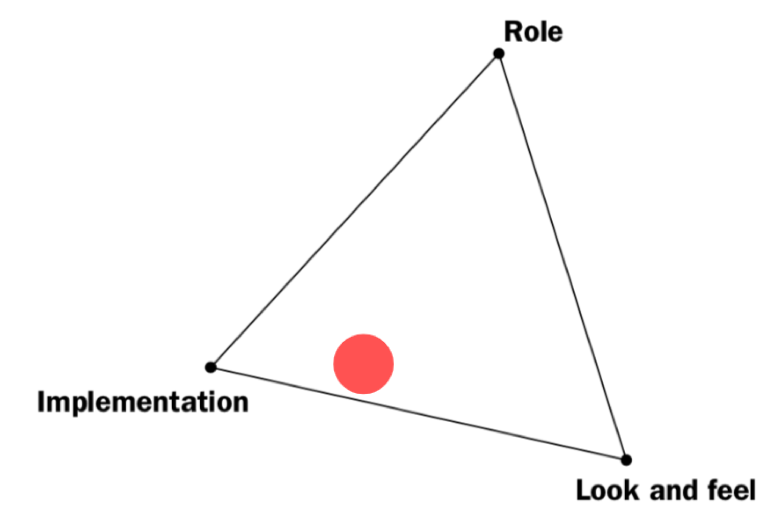
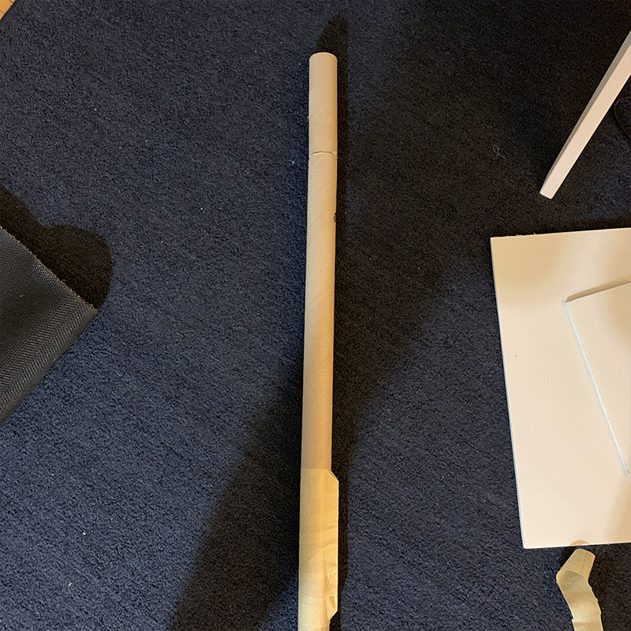

Instruction Sets for Strangers ——— On-site Prototype 2
WEEK 2 - SUN, SEPT 8TH, 2019Prototype Making
 Observations
Curious, playful and explorative
- Adults find it playful and some are curious about what is inside the fountain
- Kids are generally more explorative and curious about how to operate the fishing rod
- A lot more people were looking into the fountain
- Higher resolution & fidelity
- Way more attention from adults! As well as SMILE!
- Most adults still won’t touch the fishing rod
- Set up was very formal, the stand was made out of mailing tube and masking tape: looks fragile! And it did broke.
- Not very kid-friendly
- Cannot assume people would know how to interact with it without instruction
- The sign might not be clear
- Kids spend a lot more time interacting with the fishing rod
- Adults spend more time observing
- Object needs to be under the water instead of floating on the water